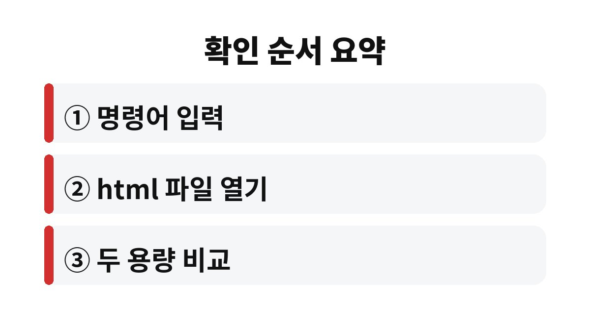

노트북 배터리 수명은 윈도우 명령 프롬프트의 배터리 보고서에서 설계 용량과 완전 충전 용량 두 숫자를 비교하면 확인된다.
2026년 11월 기준 제조사 지원 문서에 나온 명령어와 보고서 항목을 바탕으로 읽는 법을 정리했다.
프로그램을 따로 설치할 필요는 없다.
사용 기간이 길어도 용량이 크게 줄지 않은 노트북이 있다.
반대로 1년 남짓 만에 눈에 띄게 줄어든 경우도 있다.
기간보다 보고서의 숫자가 판단 근거가 된다.
잔량 표시는 추정값이라 용량이 줄어든 배터리에서 오차가 커진다.
이때도 먼저 숫자부터 확인한다.
전원 옵션이나 윈도우 업데이트 직후에 잠깐 불안정해지는 일도 있어서, 하루 이틀 지켜본 뒤에 보고서를 만드는 편이 정확하다.
충전기를 꽂으면 멀쩡하다가 뽑자마자 꺼지는 노트북도 같은 부류다.
30퍼센트가 남았다고 떴다가 몇 분 만에 꺼지는 증상은 흔히 나타나는 사례다.
백그라운드 앱이 전력을 쓰는 것은 사실이지만, 배터리 자체가 닳은 문제는 앱 정리로 되돌려지지 않는다.
앱을 정리한 뒤에도 사용 시간이 그대로라면 그때 보고서를 열어 볼 차례다.
배터리 보고서에는 항목이 많지만 처음에는 위쪽 설치된 배터리 표만 보면 된다.
여기서 두 용량을 나눠 보면 처음 대비 얼마나 남았는지 대략 알 수 있다.
예를 들어 완전 충전 용량이 설계 용량의 절반 근처로 내려와 있다면 카페에서 두세 시간 쓰는 것도 빠듯해진다.
반대로 두 숫자가 비슷하다면 사용 시간이 짧아진 원인은 배터리가 아니라 화면 밝기나 앱 쪽에 있을 가능성이 높다.
| 보고서 항목 | 의미 | 읽는 요령 |
|---|---|---|
| DESIGN CAPACITY | 새 배터리의 설계 용량 | 기준이 되는 숫자 |
| FULL CHARGE CAPACITY | 지금 완전히 채웠을 때 용량 | 설계 용량과 차이를 본다 |
| CYCLE COUNT | 충전 사이클 횟수 | 기기에 따라 0이나 빈칸으로 나온다 |

관리자 권한 없이도 생성되는 경우가 많지만, 안 되면 관리자로 다시 실행한다.
완전 충전 용량이 설계 용량과 큰 차이가 없고 하루 사용에 문제가 없다면 지금 바꿀 이유는 적다.
나는 차이가 큰데도 콘센트 앞에서만 쓰는 노트북이라 교체를 미룬 적이 있다.
반대로 외부에서 자주 쓰는데 반나절도 못 간다면 숫자와 상관없이 점검 대상이다.
보고서 아래쪽의 최근 사용 기록 표는 하루 동안 배터리가 얼마나 빠졌는지 보여 줘서, 어느 날 급하게 닳았는지 짚을 때 쓸 만하다.
다만 이 표는 읽기 번거로워 처음에는 건너뛰어도 된다.
배터리 절약 모드를 켜 두고 쓰는 습관이 있다면 그 기록도 함께 남아 있으니 사용 패턴을 되짚는 자료로 삼을 수 있다.
한 가지 더, 배터리가 부풀어 오르거나 본체 바닥이 들뜨는 증상은 숫자와 관계없이 사용을 멈추고 서비스센터에 가져가야 한다.
이 경우에는 보고서를 만들 필요도 없다.
몇 퍼센트 이하부터 교체라는 기준은 제조사마다 달라서 이 글에서는 수치를 정하지 않는다.
숫자가 설계 용량보다 확연히 낮고 사용이 불편하다면 보고서 화면을 캡처해 제조사 서비스센터에 문의하는 것이 빠르다.
교체 비용과 보증 조건은 모델마다 다르다.
오늘은 보고서를 한 번 만들어 두고, 몇 달 뒤 같은 방법으로 다시 비교해 보면 된다.
참고 자료: Dell 지원 「Generate a Battery Report Using the POWERCFG Command」(2026년 11월 확인)
※ 2026년 기준 공식 안내를 바탕으로 정리한 글이며, 기기·앱 버전에 따라 메뉴 이름이 다를 수 있다.